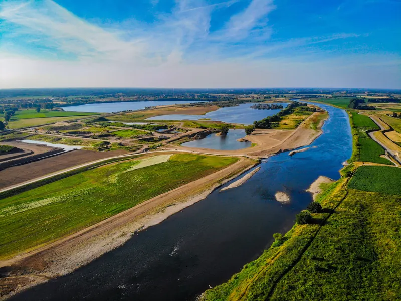

WFD
Surface water as the starting point
Which industrial sources may contribute to measured water-quality problems?
From water body to potential source.
AquaWare Werktool · source tracing of industrial discharges
One investigation workspace that links monitoring data, industrial activities, substances, permits and discharge routes. Water authorities, environmental agencies, provinces and municipalities use the same information to investigate potential sources, set priorities and align follow-up.
The challenge
Anyone who wants to improve water quality starts with two questions: where does a measured substance come from, and which companies deserve attention first? The information needed to answer them is scattered across registers, permits, monitoring series and local knowledge. In 2026 the Netherlands Court of Audit called this the information gap and the implementation gap.
WFD
Which industrial sources may contribute to measured water-quality problems?
From water body to potential source.
UWWTD
Which industrial sources may contribute, via the sewer system, to contamination of treatment plants?
From treatment plant to potential source.
One data-driven method for source tracing and risk-based prioritisation.
Water Framework Directive (WFD) · Urban Waste Water Treatment Directive (UWWTD, revised 2024)
How AquaWare works
Information on companies, substances and discharge routes is spread across sources and organisations. We collect and link it, show where the risk lies and prioritise: the result is a well-founded selection of companies, expected problem substances and targeted next steps.
Two investigation perspectives, one data chain
One question starts from a measurement, the other from the company register. In the AquaWare Werktool both run along the same chain and meet in one substantiated selection of potential sources.
Which substances and emission risks can be expected from industrial activities?
Which potential sources could explain a measured substance?
registeredexpected (modelled)
The workspace
You start with an area, a substance or a measurement — and work step by step towards a substantiated selection of companies for follow-up investigation.
Identify relevant companies and substances in an area, sewer district or river basin.
Business activities, permits, expected substances and monitoring data in one view.
Record findings, track status and history, and prepare follow-up investigation.
Illustrative view with fictional company data.
What it delivers
From a large company register to a substantiated selection of potential sources.
Focus investigation capacity on relevant companies, substances and areas.
Water authorities, environmental agencies, provinces and municipalities work from the same information.
Selections, assessments and follow-up steps are traceable and can be recorded.

Collaboration across the chain
Water authorities, environmental agencies, provinces and municipalities use the same information to investigate potential sources, set priorities and align follow-up — each from their own role. Formal follow-up stays in your own permitting and enforcement or case system.
Trace sources together and decide which companies and substances are relevant for SVHC and WFD.
Your own case management system
The Werktool is not a new case system. Your existing case system stays in the lead for formal cases and files. AquaWare supports the work before and around it: selecting, analysing, prioritising, substantiating and collaborating — until it is clear which case must be taken up formally. That way you deploy your capacity as efficiently as possible up front, and then continue in your own permitting and enforcement system.
Results from investigations and supervision flow back into the company profile and the next round of prioritisation.Your case management system remains the system of record.
Not four separate lists of the same companies, but one shared prioritisation that every partner contributes to.
Users work within their own organisation and area, with the appropriate permissions; everyone still sees one shared picture.
Your existing case system stays in the lead for formal cases and files. AquaWare supports the work before and around it — until it is clear which case must be taken up formally.
Set-up follows your task and the data available. Existing systems stay in the lead.
Discuss implementationEU hosting, a DPIA and a data processing agreement are available. Export and return of your data are always included.
Read more about security
Get in touch
A substance you cannot explain, an area with more companies than you can oversee, or a need for targeted prioritisation? We discuss your question, the available data and a possible investigation approach — and tell you honestly whether and how AquaWare can help.